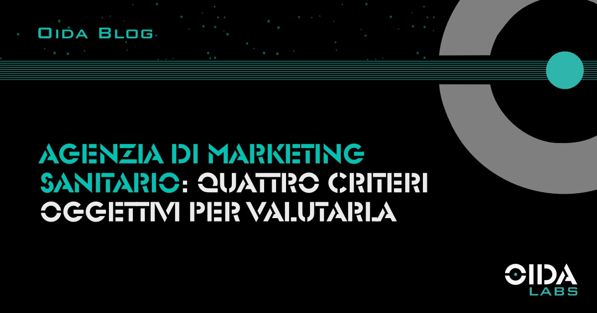

← Tutti gli articoliAgenzia di marketing sanitario: quattro criteri oggettivi per valutarla
Scegliere un'agenzia di marketing sanitario richiede criteri precisi. Quattro parametri operativi per valutare specializzazione, metodo e accountability di chi lavora in sanità.
La scelta di un’agenzia di marketing sanitario è una decisione che incide su mesi di investimenti e sulla credibilità della struttura verso il paziente. I parametri che ne misurano la qualità sono tecnici e verificabili. Questo articolo ne individua quattro, costruiti sull’esperienza operativa nel settore.
- Specializzazione verticale e conoscenza del settore
- Metrica di riferimento: CAC invece di CPL
- Continuità tra presentazione commerciale e gestione operativa
- Struttura contrattuale e definizione dei KPI
- FAQ
Specializzazione verticale e conoscenza del settore
La prima distinzione utile riguarda la profondità della competenza settoriale. Il marketing sanitario ha dinamiche che non si trovano in altri mercati: il paziente decide in tempi brevi, spesso in una condizione emotiva particolare, e filtra le opzioni attraverso un sistema di fiducia diverso da quello che regola altri acquisti. Le stagionalità delle patologie — il picco delle richieste ortopediche a settembre, la domanda cardiologica invernale, la curva primaverile della chirurgia estetica — orientano in modo significativo la pianificazione media.
Un’agenzia che lavora stabilmente nel settore ha internalizzato questi elementi. Conosce i tempi medi di risposta a un lead sanitario, capisce il peso della reputazione del singolo professionista rispetto alla reputazione della struttura, sa distinguere tra specialità ad alto commitment decisionale e specialità a conversione rapida. Questa familiarità si riflette nelle scelte di targeting, nella costruzione delle creatività e nell’allocazione del budget lungo l’anno.
Il criterio operativo è semplice: chiedere quali specialità ha presidiato l’agenzia, su quali volumi, con quali benchmark di conversione. Le risposte che includono numeri — CPL medi, conversion rate lead-paziente, durata tipica dei cicli di campagna — sono quelle che dimostrano lavoro sul campo.
Metrica di riferimento: CAC invece di CPL
La seconda differenza si misura sulla metrica primaria. Il CPL, costo per lead, indica quanto costa generare un contatto. Il CAC, costo di acquisizione per paziente, indica quanto costa trasformare quel contatto in una visita effettivamente svolta. Tra i due numeri esiste spesso una distanza significativa — ne abbiamo parlato in dettaglio in un articolo dedicato alla differenza tra CPL e CAC — e gestirla è ciò che separa una campagna tecnicamente corretta da una campagna economicamente sostenibile.
Nei progetti che OIDA Labs segue direttamente, la distanza tra i due indicatori può risultare rilevante. Una campagna tarata correttamente sul CPL può convivere con un CAC molto più alto del previsto quando il funnel a valle del click non è strutturato per convertire: tempi di risposta dilatati, tassi di show non monitorati, sequenze di reminder assenti.
Un’agenzia specializzata lavora su entrambe le metriche. Ottimizza la generazione dei lead, ma misura anche il tasso di conversione lead-paziente e, dove possibile, contribuisce a strutturare il processo di follow-up interno. Questo approccio richiede di entrare nella meccanica operativa della struttura cliente, capire come vengono gestite le richieste in arrivo, quali strumenti di CRM sono disponibili, come il personale di front-office viene coinvolto. Chiedere in fase di valutazione come l’agenzia misura il CAC — e non solo il CPL — è un indicatore immediato del livello di lavoro offerto.
Continuità tra presentazione commerciale e gestione operativa
Il terzo criterio riguarda la coerenza tra chi presenta il servizio e chi poi lo eroga. Nella fase commerciale il confronto avviene tipicamente con un account senior o con un socio dell’agenzia. L’operatività quotidiana — ottimizzazioni, report, gestione creativa — può poi essere affidata a figure con seniority e specializzazione differenti.
Non è la seniority in sé a fare la differenza. È la continuità di conoscenza del cliente. In un settore dove ogni decisione creativa e strategica è influenzata dal contesto clinico, la persona che gestisce operativamente il progetto deve avere la stessa comprensione del settore che ha chi ha condotto la presentazione iniziale.
Le domande operative utili in fase di valutazione sono tre:
- Chi sarà il referente diretto
- Quanti progetti sta seguendo in parallelo
- Qual è la sua esperienza specifica nel marketing sanitario
Le risposte forniscono un’indicazione più accurata di qualsiasi portfolio presentato.
Struttura contrattuale e definizione dei KPI
Il quarto criterio si gioca sull’architettura dell’accordo. Un’agenzia che lavora con metodo definisce gli obiettivi prima di iniziare in termini misurabili — non formule generiche come “aumentare la visibilità”, ma parametri specifici come “portare il CPL sotto una soglia X entro novanta giorni” o “incrementare il tasso di show degli appuntamenti fissati del Y%”.
Un buon accordo distingue con chiarezza ciò che dipende dall’agenzia e ciò che dipende dalla struttura. Una campagna ottimizzata produce lead qualificati; la conversione in pazienti dipende dalla velocità di risposta, dalla formazione del front-office, dalla disponibilità delle agende, dal processo di follow-up. Un’agenzia che accetta di essere misurata sul CAC pretende anche che questi elementi vengano gestiti a monte, e mette nero su bianco i rispettivi perimetri di responsabilità.
Questa chiarezza contrattuale è ciò che rende sostenibile il rapporto nel tempo. Indica un metodo di lavoro basato su accountability reciproca, non su aspettative implicite.
Sintesi
I quattro criteri — specializzazione verticale, metrica CAC, continuità operativa, struttura contrattuale — sono tutti verificabili in fase di valutazione attraverso domande precise. Un’agenzia attrezzata per lavorare in sanità risponde con numeri e processi, non con affermazioni generali.
FAQ
Qual è il budget indicativo per un’agenzia di marketing sanitario?
I range dipendono dalla scala dei servizi. La sola gestione delle campagne digitali (Meta Ads, Google Ads) parte da circa €1.500–2.500 mensili oltre al budget pubblicitario. Pacchetti che includono strategia, contenuti, CRM e reportistica strutturata si posizionano tra €3.000 e €8.000 mensili. La variabile più significativa rimane il CAC finale: un investimento maggiore con un funnel ben strutturato può risultare più efficiente di uno inferiore senza misurazione a valle.
Come si misura il risultato di una campagna di marketing sanitario?
L’indicatore principale è il CAC, costo di acquisizione per paziente. Un CPL basso con tasso di conversione lead-paziente del 5% è meno efficiente di un CPL più alto con conversione del 25%. Ad accompagnare il CAC servono il tasso di risposta ai lead, il tempo medio di risposta, il tasso di show degli appuntamenti e, per le specialità con follow-up ricorrente, il lifetime value del paziente.
Quanto tempo serve prima di valutare l’impatto?
I primi sessanta giorni servono a calibrare targeting e creatività. I risultati strutturali, quelli che consentono un confronto con benchmark di settore, emergono tra il terzo e il sesto mese, quando la campagna ha raccolto dati sufficienti a essere ottimizzata su base statistica e il funnel a valle si è stabilizzato.
Fonti: Dati interni OIDA Labs (analisi su campagne di marketing sanitario gestite 2023–2025), BrightLocal Healthcare Consumer Review Survey 2024, MIT Sloan / InsideSales.com Lead Response Management Study.